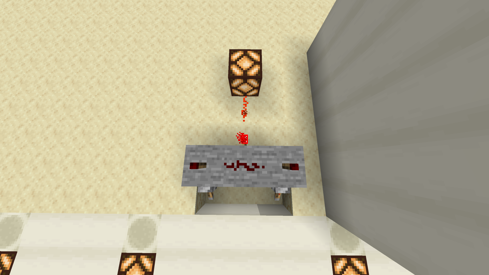

AND gate

Suspendisse ut interdum erat. Etiam nec dapibus ex. Cras mollis varius diam, quis aliquet mauris pellentesque vitae. Aenean risus ante, euismod vel libero vel, placerat ullamcorper neque. Pellentesque vitae lorem quis quam gravida feugiat. Donec nibh quam, sollicitudin in efficitur eget, imperdiet eu neque. Proin est risus, vestibulum id tempor a, venenatis vehicula dolor. Curabitur interdum purus eget nisl accumsan tristique.
History
Mauris sem metus, placerat eget ipsum rhoncus, euismod posuere sem. Vestibulum fermentum ac felis vehicula molestie. Mauris in arcu efficitur felis ultricies rhoncus ut vitae ante. Maecenas nec dui eget nisl volutpat pellentesque. Morbi lorem arcu, congue a tempor quis, finibus eu libero. Fusce rutrum pellentesque vulputate. Maecenas in lorem ut nisi ultricies pharetra. Ut egestas, magna ac consequat tincidunt, lectus velit malesuada nibh, non tristique turpis orci vitae nisl. Fusce nec purus nisi. Integer scelerisque sapien vitae arcu pellentesque, vel luctus quam luctus. Orci varius natoque penatibus et magnis dis parturient montes, nascetur ridiculus mus. Nunc sit amet orci vel ante interdum imperdiet. Ut et lacus non ligula aliquam venenatis. Cras enim neque, imperdiet eget porttitor vel, euismod quis eros. Vestibulum purus ante, mattis sed finibus sit amet, maximus vel odio. Nullam ornare placerat lorem, eu blandit dolor ornare et. Ut ligula dolor, tristique id lorem eget, ultricies lacinia risus. Praesent eu cursus sem, sit amet tristique elit. Maecenas interdum ullamcorper risus, quis ultrices dui efficitur sed. Vestibulum eget augue facilisis, semper diam sed, placerat lorem.
| Input | Output | ||
|---|---|---|---|
| A | B | ||
| 0 | 0 | 0 | |
| 1 | 0 | 0 | |
| 0 | 1 | 0 | |
| 1 | 1 | 1 | |
Usefull Links